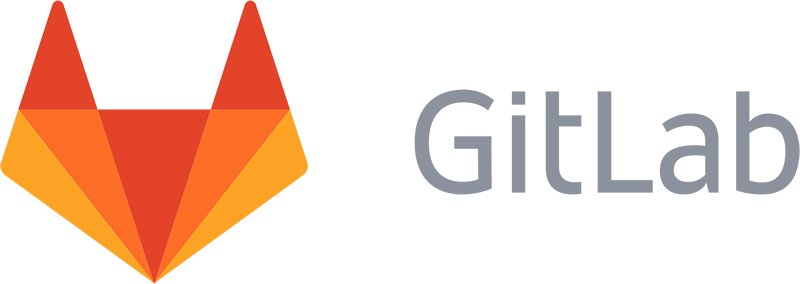

何故Gitを使うのか？
Gitのない開発

何かバグってんぞ、このコードいつ誰が書き換えた？
えーっと、ここの動きを変えたいけれど、コードを大幅に改修しなければならないから、ひとまずファイルを別名で保存して…

納品前に開発してたパソコン壊れた。バックアップも取ってないや… (・ω<)
俺が作った部分後輩が上書きしやがったせいでやり直しだ。
こういう悲劇・面倒を防げます
Git≠GitHub
Git
Gitはバージョン管理を行うツールの名前である。
GitHub
GitHubはGitのリモートリポジトリを提供するサービスの名前である。
同様のサービスにBitbucket、Backlog、GitLabなどがある。


/